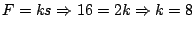
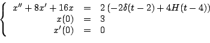
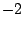
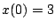

|
|
|
|
|Instituto Tecnológico de Costa Rica|Escuela de Matemática| M. Sc. Geovanni Figueroa M. |
1 2
3 4
5 6 7
8 9
10 11
12 13 14 15
16
|
|
Sistemas mecánicos
Ejemplo
Solución

Con lo cual el modelo matemático es

Aplicando transformada
El  que acompaña a la función delta se debe a que el golpe es desde abajo con una intensidad de 2 unidades, además recuerde que , pues el peso esta por debajo de la posición de equilibrio. Aplicando fracciones parciales
De donde obtenemos que
Y así
|